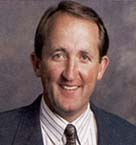

|
Notes From The |
||
|
 Dear Alumni: As the alumni director, I guess it is fitting that I also have the opportunity to work as publisher of this alumni publication. Our editor and I regularly forward and share the many letters we receive, and it’s your feedback that keeps us informed, up-to-date, and constantly striving for something better. The purpose of publishing Summit Magazine
|
is to bring you something informative and enjoyable and provide a way for you to stay connected to Ricks College. I hope you have noticed the many ways our staff has worked to make this magazine even better over the last few years. This first issue of the year, and century, not only has a few pages added to the magazine’s length, but is now available online. You can get it by going to www.byui.edu/summit. Please take the opportunity to also check www.byui.edu/alumni to learn more about this year’s awardees, learn of upcoming events sponsored by our growing force of local alumni councils, and update your own records and find old friends on our Alumni Directory! I hope that this and every issue continues to provide happy ties for you.
|
Read on and enjoy, Devin Shaum (79) Devin was named director of the college's alumni association in 1998 following the retirement of Gary Brock. As a student at Ricks, Devin was executive vice president of ASRC He graduated from BYU in 1982 with a degree in human resources and returned to Ricks in 1983 as an admissions counselor. In 1987 he joined the Development office as director of annual giving. He later was placed in charge of major gifts and was an associate director of Development prior to his current assignment.
|